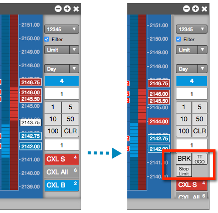
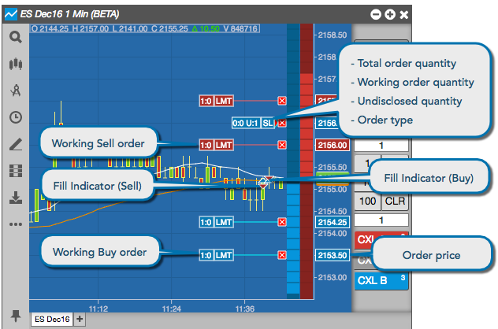
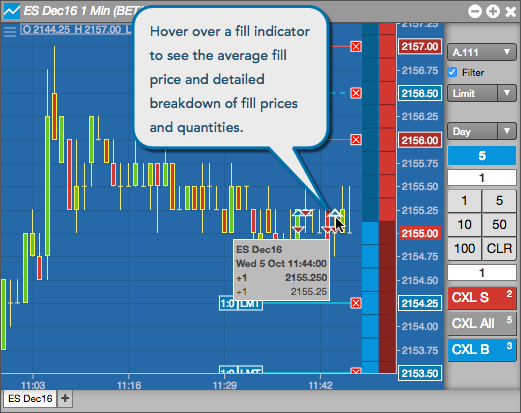
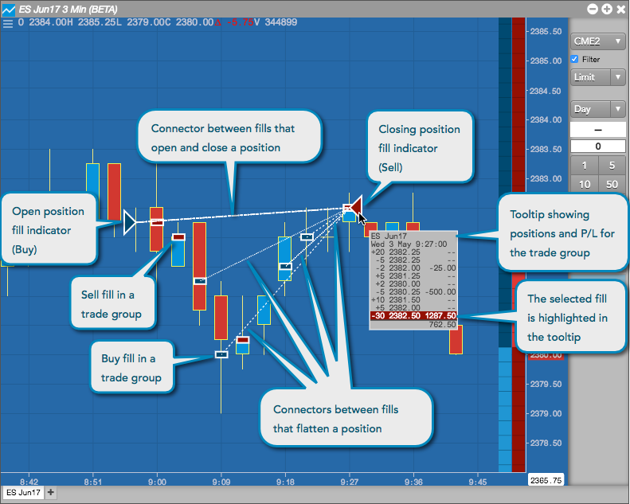
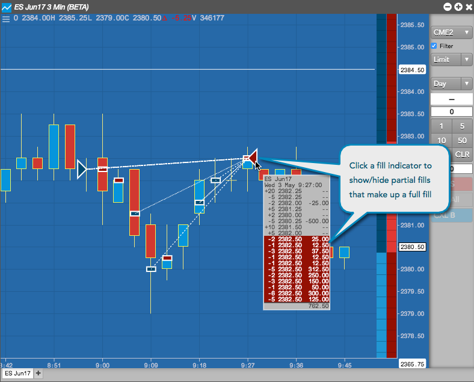
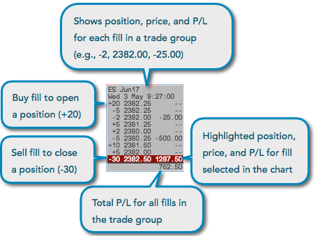
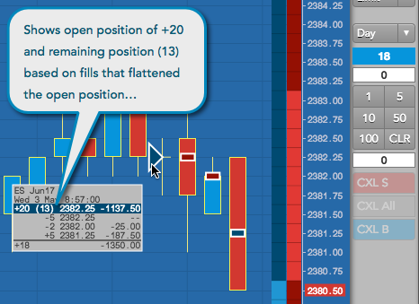

Order type buttons
If you frequently use one or more order types, you can add buttons to the order pane that automatically set the order type instead of selecting it from the order type drop-down. For example, if you frequently submit Stop Limit orders and TT OCO and TT Bracket orders, you can add buttons to set the order type in the order pane.

When you click an order type button, it automatically sets the order type and disables the drop-down. It remains active until you de-select the button or select a different order type, so you can quickly place multiple orders without having to select the order type.
Fills and Working Orders
From a chart, you can display and track your working orders and fills for the associated instrument by displaying them directly on the chart. By displaying this information on a chart, you can easily see how your orders and fills relate to the analytical data, when your fills occurred, how long your orders have been working, your trading activity over time, and so on. To display fills or working orders, you enable the Show Fills and Show Working Orders chart settings.
Fills are color-coded based on the side of the trade: blue for buy fills, or red for sells. When showing fills on a chart, the following fill indicators may be displayed:

Note: Fills and working orders can be displayed and orders can be modified when the order pane and Bids and Asks columns are either hidden or shown in the chart.
When you enable Show Fills, you can select whether to show the fills grouped by time interval or grouped by position. When showing fills on the chart, you also have the option to select a time and date to begin checking for fills by interval or
position. This allows you to track and analyze fills within a given trading period. P/L and positions are calculated and displayed based on the selected time interval.
Fills grouped by interval
The chart provides you the option to group fills by time interval. When you hover over a fill indicator
(red or blue triangle), the chart displays a tool tip with information about the fills for that interval. It shows each price and quantity of each fill that occurred during the interval, as well as the average fill price for the interval.

Fills grouped by position
The chart also provides you the option to group fills by position. When this option is enabled, fill indicators and connectors are displayed to indicate if a fill opens, closes, adds to, or flattens a position. Fills are matched on a FIFO (first-in, first-out) basis.
When you hover on a fill indicator when grouping fills by position, the chart displays a tool tip that shows entry and exit prices and P/L for the trade, and displays a dotted line to connect the fills that flatten the position.

For example, a buy fill that opens a long position connects to sell fills, and a sell fill that closes a long position connects to buy fills. Connectors are displayed for fills in a "trade group," which consists of all fills grouped by position. When hovering on a fill in a trade group, all fills in the group are highlighted.
Click a fill indicator to expand the tool tip and show partial fills that comprise a full fill. When hovering on a fill indicator, the fill details (position, price, and P/L) are highlighted to indicate a buy fill (blue) or sell fill (red).

Tooltip display
The tooltip shows positions as either long or adding to an open position (+), or short or subtracting from a position (-). In addition, the tooltip shows if a trade increased (+) or decreased (-) your P/L on a per fill basis. The total P/L for the trade group is also displayed.

As an open position becomes flat, the remaining position is displayed in parentheses next to the initial open position. For example, if you are long 20, but have decreased your position by 7, the toolip displays your open position as +20 (13):
